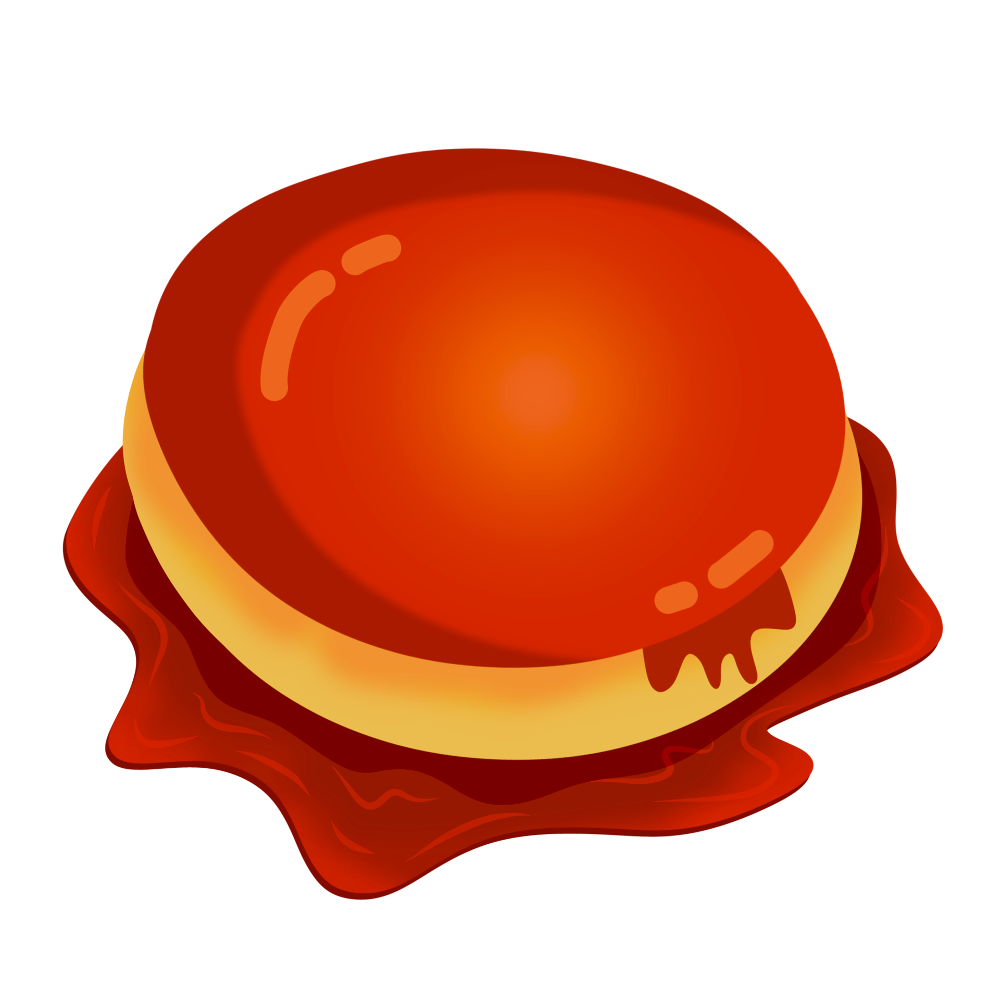

A traditional Dessert in many many house, made out of eggs and milk
Preheat the oven to 350 degrees F (175 degrees C).
Prepare a bain-marie, or water bath, by filling a 9-inch heat-proof container with water.
Melt sugar in a nonstick pan over medium-low heat, stirring constantly until melted, 7 to 10 minutes; be careful to keep it from burning. Pour sugar into a flan mold, coating the sides to ensure that the egg/milk mixture in the next step will not touch the container.
Pour sweetened condensed milk into a bowl. Fill the empty can with milk and add to the bowl; stir in eggs and vanilla extract. Blend well. Fold mixture with a spatula or tap against the counter to remove air bubbles.
Pour milk mixture into the slightly cooled flan mold. Put the lid on and place inside the water bath; don't let the water go over the rim.
Bake the quesillo in the bain-marie in the preheated oven for 45 minutes. Pry lid open with a knife carefully; continue baking until set, about 15 minutes more.
Let quesillo cool to room temperature, at least 25 minutes; refrigerate 8 hours to overnight. Slide a knife around the edged of the mold to loosen and invert on a plate.